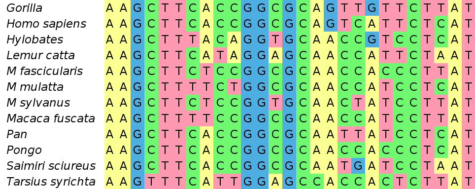

Statistical Phylogenetics
The University of Auckland
Phylogenetic Trees
What is a Phylogenetic Tree?
A phylogenetic tree is a branching diagram showing the inferred evolutionary relationships among various biological species or other entities (their phylogeny) based on similarities and differences in their physical or genetic characteristics.
A short history

A short history (continued)

A short history (continued)

Trees and Data
- Trees are inferred from characteristics of the entities they relate.
- Characteristics are now often genetic, but may also be phenotypic.
- The true tree constrains the distribution of these characteristics.
Species and Gene Trees

- Many phylogenetic trees can be classed as either species or gene trees.
- Gene trees are nested within species trees.
- While species trees constrain gene trees, topologies may differ
Very similar relationship between transmission trees and pathogen trees.
The Neutrality Assumption
In statisical phylogenetics, the common assumption is that the shape of the tree affects the distribution of characters, but not the other way around.We are thus concerned only with neutral evolution.
The phylogenetic inference problem
Given a set of $M$ sampled molecular sequences, infer the evolutionary relationships between them.
In a sense this is a just a clustering problem...
The phylogenetic inference problem
- Edge lengths may represent genetic distance or time (if the molecular clock rate is known).
- How can we do better than this?
Modelling Molecular Evolution
Genetic drift
The random fluctuation in the frequency of a trait or allele (gene variant) distribution within a population due to the demographic process.
Modelling neutral genetic drift


- All individuals descend from a common ancestor at some point in the past.
- Probability that the descendants of a given individual "take over" is $1/2N$.
The molecular clock hypothesis
- In a single generation a new allele is produced in the population with probability $2N\mu$.
- Any individual gene eventually becomes fixed in the population with probability $1/2N$.
The probability per generation that a new allele fixes is therefore $\mu$: independent of population size!
This is not exactly true.
Markov chains
Suppose we have a sequence of discrete variables $M_1,M_2,M_3\ldots$ where each variable can take values between 1 and $V$. The probability distribution over the first value is $P(M_1=m)\equiv p_1(m)$.
Subsequent probability distributions are related by: $$ p_{i+1}(m')=\sum_{m=0}^{V}T_{mm'}p_{i}(m) $$
That is, $$ p_2(1) = T_{11}p_1(1) + T_{21}p_1(2) + \ldots + T_{V1}p_1(V) $$
This is a stochastic process called a Markov chain and $T_{mm'}$ is called the transition matrix.
Substitution Models
Substitution is modeled as a (continuous time) Markov chain:Almost the only difference between different substitution models is the transition matrix.
Usually the average rate of substitution ($\mu$) is factored out of the transition matrix.
The Jukes-Cantor Model
The Jukes-Cantor model is the simplest (and least realistic) substitution model.$T_{ij}$ is constant for all $i \neq $j.
- Point mutations are equally likely between any pair of nucleotides.
- No difference between transitions and transversions.
- Equilibrium base frequencies are uniform.
Despite this, Jukes-Cantor is sometimes useful due to its simplicity.
Distances and Saturation
Under a Jukes-Cantor model, the probability over character states as a function of time can be computed exactly: $$ p_{diff}(t)=\frac{3}{4} - \frac{3}{4}e^{-\frac{4}{3}t} $$
Can be used to estimate distance: $\hat{t}=-\frac{3}{4}\log(1-\frac{4}{3}q)$.
The Tree Likelihood
The tree likelihood $P(D|T,\sigma)$ is the probability that the observed sequences were produced by evolving a single ancestral sequence down $T$ under a neutral substitution model with parameters $\sigma$.

There is an efficient algorithm for computing this (summing over all possible ancestral sequences): Felsenstein's pruning algorithm.
Maximum Likelihood Inference
Maximum likelihood phylogenetic inference methods produce a single point estimate of the phylogenetic tree by seeking to maximize $P(D|T,\sigma)$ with respect to the tree $T$.
- Popular implementations of this method include PhyML and RAxML.
- These methods are fast.
- Point estimates provide no direct indication of the quality of the estimate - forced to used ad hoc methods such as bootstrap to remedy this.
- ML does not allow the incorporation of available prior information.
The HKY Substitution Model
Continuous time transition matrix: $$ Q = \left(\begin{array}{cccc} * & \kappa\pi_C & \pi_A & \pi_G \\ \kappa\pi_T & * & \pi_A & \pi_G \\ \pi_T & \pi_C & * & \kappa\pi_G \\ \pi_T & \pi_C & \kappa\pi_A & * \end{array}\right) $$
- Non-equlibrium base frequencies.
- Includes transition/transversion rate ratio $\kappa$.
- The simplest sensible model of neutral DNA evolution.
The GTR Substitution Model
Continuous time transition matrix: $$ Q = \left(\begin{array}{cccc} * & \alpha\pi_C & \beta\pi_A & \gamma\pi_G \\ \alpha\pi_T & * & \delta\pi_A & \epsilon\pi_G \\ \beta\pi_T & \delta\pi_C & * & \eta\pi_G \\ \gamma\pi_T & \epsilon\pi_C & \eta\pi_A & * \end{array}\right) $$
- The most general time-reversible model.
- Ten parameters in total (9 if the average substiution rate is factored out).
- All other time-reversible models are a special case of this.
Glaring Omissions
How great are these fancy models of substitution?
Not great! There are many omissions!
- Don't model insertions/deletions.
- Don't model recombination.
- No allowance for rate variation between sites or over tree.
There are several ways to address the last two points, some of which are implemented in BEAST.
Modelling Genealogies
The genealogical process
- In the absence of selection, we can consider the process of tree generation in isolation.
- If we are to take models of population genetics seriously, there is a full true species/gene tree and it is produced by a forward-in-time branching process.
- Since we usually only ever sample a subset of the entities in this complete tree, the genealogy relating our samples is constructed backward-in-time from our samples.
The tree prior
The tree prior $P(T|\theta,l)$ is the probability (density) of a tree $T$ conditional on a genealogical process with parameters $\theta$ and additional sample data $l$ that is not part of the alignment.
- The tree prior is where much of the diversity in Bayesian phylogenetics resides.
- Choosing different tree priors allows analyses to be tailored to a huge variety of different scenarios including:
- macroevolution,
- within-population evolution,
- pathogen evolution,
- transmission tree inference,
- et cetera!
Models for species trees
- The Yule model (pure birth)
[Yule, 1924] - The more general birth-death sampling model [Stadler, 2010]
- The fossilized birth-death model [Heath, 2014] directly fossil data
The BDS tree prior is parameterized by a birth rate $\lambda$, death rate $\mu$ and sampling parameters $\rho$ and $\psi$, while the Yule prior only uses $\lambda$.
Example Yule tree
Gene trees: the coalescent
Arises as a limit of many models in population genetics.- Probability of coalescence in single generation $\sim\binom{k}{2}\frac{1}{2N}$
- Geometric distribution between coalescence events.
Example coalescent tree
Phylodynamic models
The term phylodynamics was introduced by Grenfell and others [Science, 2004] to describe the interaction between evolution and epidemiological dynamics and its effect on the phylogenies of rapidly evolving pathogens.
Some models which exploit this interaction to learn about epidemics using genetic data are becoming common:
- BDSKY [Stadler et al., 2013]
- BDSIR [Kühnert et al., 2014]
- Coalescent-based models [Volz et al., 2009, 2012]
- Exact models [Leventhal et al., 2014]
Allow inference of $R_0$ and other parameters, including prevalence curves.
Bayesian Phylogenetic Inference
Bringing everything together
The goal of phylogenetic inference is generally to learn about the phylogeny of a set of sampled genetic sequences.
As Bayesians we accomplish this by seeking to characterise the joint posterior: $$P(T,\sigma,\theta|D) = \frac{1}{P(D)} P(D|T,\sigma)P(T|\theta,l)P(\sigma)P(\theta)$$
- $P(D|T,\sigma)$ is the tree likelihood
- $P(T|\theta,l)$ is the tree prior
- $P(\sigma)$ and $P(\theta)$ are the parameter priors
We simultaneously learn about the tree and the parameters!
Where is our data?
Let's look again at the full posterior density:$$P(T,\sigma,\theta|D) = \frac{1}{P(D)} P(D|T,\sigma)P(T|\theta,l)P(\sigma)P(\theta)$$
- Where is the likelihood?
- Related: where is our data?
Labels such as "likelihood" and "prior" are in some sense artificial, and can become ambiguous for complex models.
How many trees are there?
MCMC on tree space
Our posterior is a probability distribution over trees, so our MCMC algorithm must be able to explore tree space. (Much harder than exploring the real number line!)
Non-identifiability
When the data are not informative for a particular parameter, the parameter is said to be non-identifiable.- A classic example is the clock rate $\mu$ under a coalescent model when only contemporaneous sequences are available. In this case only the product $\mu N$ can be inferred.
- More subtle examples are found in the structured coalescent and Clonal Origin models to be discussed this afternoon.
In Bayesian analyses non-identifiability is not always a big problem: the worst that can happen is that a parameter is sampled from it's prior...
Improper Priors
...which can be catastrophic if that prior is improper! In this case, the posterior will also be improper.
Happily, there is a strong signature of an improper posterior: a variable in the MCMC state chain will steadily grow, eventually exceeding the maximum floating point value allowed by the computer. If this happens, it is highly likely that the marginal posterior of the parameter in question is not normalizable.
Further reading